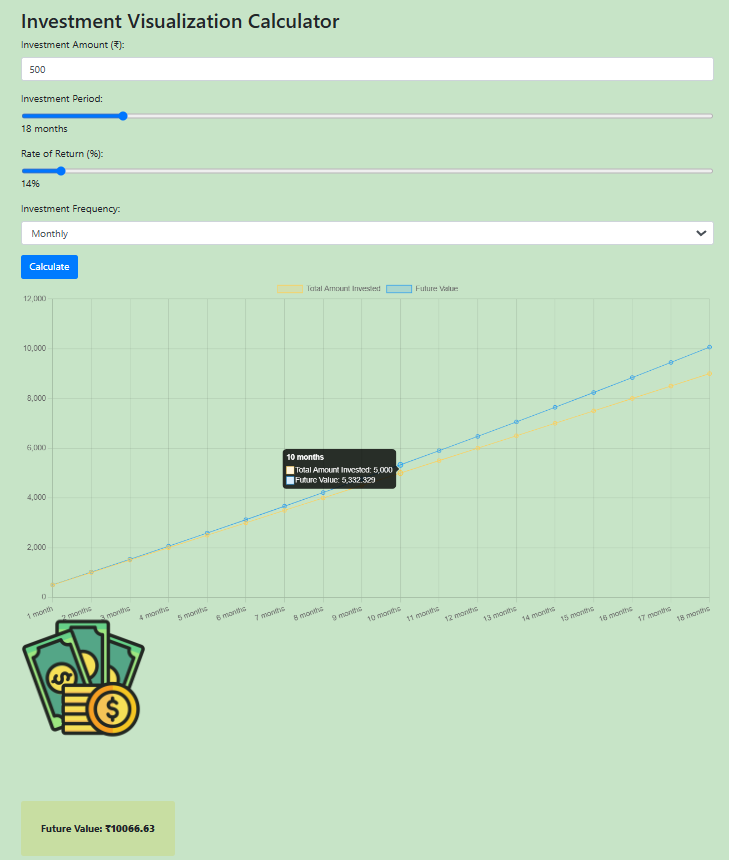

Aspiring Data Scientist and Finance Enthusiast | IIT Patna 2nd year Student
Pursuing BSc(Hons) degree in Computer Science & Data Analytics at IIT Patna. Passionate about technology, finance, and leveraging data for positive change. Committed to continuous learning and eager to contribute to the dynamic fields of tech and finance. Driven by a strong desire for nation-building, focusing on the power of education, innovation, and collaboration to drive progress and development.
BSc(Hons): Computer Science & Data Analysis (CSDA), Data Processing and Data Processing
Jul 2023 - Jul 2026
SPI: 9.21 (3rd sem) & CPI: 8.62
12th, PCM | Senior Secondary School
Apr 2020 - Jun 2022
Grade: 78.6%
10th, Secondary School
Apr 2019 - Apr 2020
Grade: 86.4%
Activities and Societies: Set up Shop in school programs with friends, Bicycling
Score: 91.665 %tile · Jul 2022
Qualified
"Bharat ki Bachat" is a Capstone-I project by me and my team members of the Hybrid UG program in Computer Science & Data Analytics at IIT Patna. The project addresses the financial literacy gap in India by providing a comprehensive financial management tool designed to be accessible to all, including rural communities and individuals with varying levels of digital literacy. The platform features a user-friendly dashboard, educational resources, and robust security measures to enhance financial literacy, promote inclusion, and empower users to make informed financial decisions. Key features include data aggregation, transaction visualization, multilingual support, and tools for taxation and investment visualization. The project also integrates social media for real-time updates and community engagement. Security is a priority, with measures like data encryption and secure authentication in place. The collaborative effort of the team has resulted in a platform that not only educates users but also protects them from cyber threats. "Bharat ki Bachat" aims to contribute to the national goal of financial well-being, supporting government initiatives and fostering a financially secure society.
A compounding calculator is a financial tool that helps users understand the growth potential of their investments over time by calculating the effects of compound interest. It allows users to input variables such as the initial investment amount, interest rate, and the number of compounding periods to project the future value of their investments.
Significance: Visualizing Growth: It helps users visualize how their investments can grow over time, emphasizing the power of compound interest. Informed Decisions: By showing potential returns, it aids users in making informed investment decisions. Financial Planning: It assists in long-term financial planning by providing insights into how regular investments can accumulate wealth. Educational Tool: It serves as an educational resource, enhancing users' understanding of financial concepts and the importance of starting early with investments. Overall, a compounding calculator is a valuable tool for promoting financial literacy and helping users achieve their financial goals.